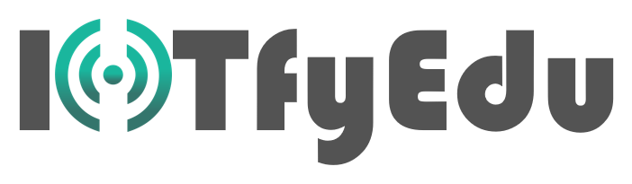

01
Sıcaklık24.8°C
Bilim Laboratuvarı
IoT temelli fen deneylerini gerçek materyaller ve canlı sensör verileriyle sınıfa taşır.
İçerikleri gör ↗
AI ve IoT ile fen, bilgisayar ve veri bilimini sınıfa taşıyan; fiziksel deneyimi dijital öğrenmeyle buluşturan bütünleşik ekosistem.
Fiziksel materyalden öğretmen paneline, deneyden raporlamaya kadar öğrenme yolculuğunun her adımı birbiriyle konuşur.
IoT temelli fen deneylerini gerçek materyaller ve canlı sensör verileriyle sınıfa taşır.
İçerikleri gör ↗Veri toplamayı, elektronik devreleri ve fiziksel hesaplamayı uygulanabilir hale getirir.
Video, animasyon, AR, 3D ve etkileşimli içeriklerle öğrenme okul dışında da sürer.
Öğrenci erişimi, içerik yönetimi ve gelişim takibi tek merkezde.
Okulda, evde veya hibrit kullanım için tasarlanmış; kademe ve konu bazında keşfedilebilir içerikler.
Sensörlerden canlı veri topla, kodla ve gerçek dünya olaylarını yorumla.
Veri setlerini keşfet, örüntüleri gör ve anlamlı çıkarımlar üret.
Hikâye, oyun ve animasyon tasarlarken algoritmik düşünmeyi geliştir.
Bir fikri modelle, prototiple ve dijital tasarımdan fiziksel ürüne taşı.
Sınıflama ve örüntü etkinlikleriyle veri okuryazarlığına ilk adım.
Sensör, bağlantı ve otomasyon mantığını gerçek problemlerle keşfet.
Her konu, gerçek bir problemden başlayıp öğrencinin kendi çözümünü üretmesine uzanan ölçülebilir bir yolculuğa dönüşür.
Öğrencinin ilgisini çeken gerçek yaşam problemi ya da senaryo ile öğrenme yolculuğu başlar.
Gözlem, sınıflama, veri okuryazarlığı ve örüntü tanıma becerilerini oyun temelli etkinliklerle geliştirir.
Teknik bilgi gerekmez. Kurulumdan öğretmen eğitimine, içerik erişiminden raporlamaya kadar yanınızdayız.
QR rehberlerle kısa sürede kullanıma hazır.
Öğretmen ve yönetici için uygulamalı eğitim.
Kademe ve öğrenme alanına göre LMS erişimi.
Proje ve sınıf verisi tek panelde.
Öğrenme alanı, kademe ve uygulama kapsamına göre cihaz, içerik ve desteği birlikte planlayın.
Fen deneylerini sensörler, Mini Lab ve canlı veriyle görünür kılar.
Kodlama, elektronik, 3D tasarım ve oyun üretimini bir araya getirir.
Fen, bilgisayar, yapay zekâ ve veri bilimini tek ekosistemde buluşturur.
Öğrenciler veriyi sadece ekranda görmedi; sensörden gelen gerçek veriyi ölçüp yorumladı. Fen dersi artık çok daha görünür.
Ayşe YılmazFen Bilimleri Öğretmeni · İstanbul
Hedeflerinizi dinleyelim, kademenize ve altyapınıza en uygun IoTfyEdu deneyimini birlikte kurgulayalım.